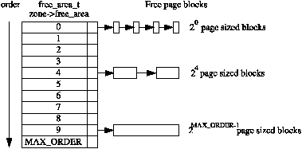
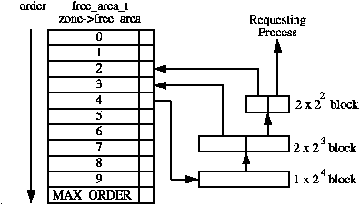
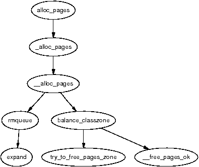
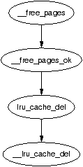

This chapter describes how physical pages are managed and allocated in Linux. The principal algorithmm used is the Binary Buddy Allocator, devised by Knowlton [Kno65] and further described by Knuth [Knu68]. It is has been shown to be extremely fast in comparison to other allocators [KB85].
This is an allocation scheme which combines a normal power-of-two allocator with free buffer coalescing [Vah96] and the basic concept behind it is quite simple. Memory is broken up into large blocks of pages where each block is a power of two number of pages. If a block of the desired size is not available, a large block is broken up in half and the two blocks are buddies to each other. One half is used for the allocation and the other is free. The blocks are continuously halved as necessary until a block of the desired size is available. When a block is later freed, the buddy is examined and the two coalesced if it is free.
This chapter will begin with describing how Linux remembers what blocks of memory are free. After that the methods for allocating and freeing pages will be discussed in details. The subsequent section will cover the flags which affect the allocator behaviour and finally the problem of fragmentation and how the allocator handles it will be covered.
As stated, the allocator maintains blocks of free pages where each block is a power of two number of pages. The exponent for the power of two sized block is referred to as the order. An array of free_area_t structs are maintained for each order that points to a linked list of blocks of pages that are free as indicated by Figure 6.1.

Figure 6.1: Free page block management
Hence, the 0th element of the array will point to a list of free page blocks of size 20 or 1 page, the 1st element will be a list of 21 (2) pages up to 2MAX_ORDER−1 number of pages, where the MAX_ORDER is currently defined as 10. This eliminates the chance that a larger block will be split to satisfy a request where a smaller block would have sufficed. The page blocks are maintained on a linear linked list via page→list.
Each zone has a free_area_t struct array called free_area[MAX_ORDER]. It is declared in <linux/mm.h> as follows:
22 typedef struct free_area_struct {
23 struct list_head free_list;
24 unsigned long *map;
25 } free_area_t;
The fields in this struct are simply:
Linux saves memory by only using one bit instead of two to represent each pair of buddies. Each time a buddy is allocated or freed, the bit representing the pair of buddies is toggled so that the bit is zero if the pair of pages are both free or both full and 1 if only one buddy is in use. To toggle the correct bit, the macro MARK_USED() in page_alloc.c is used which is declared as follows:
164 #define MARK_USED(index, order, area) \ 165 __change_bit((index) >> (1+(order)), (area)->map)
index is the index of the page within the global mem_map array. By shifting it right by 1+order bits, the bit within map representing the pair of buddies is revealed.
Linux provides a quite sizable API for the allocation of page frames. All of them take a gfp_mask as a parameter which is a set of flags that determine how the allocator will behave. The flags are discussed in Section 6.4.
The allocation API functions all use the core function __alloc_pages() but the APIs exist so that the correct node and zone will be chosen. Different users will require different zones such as ZONE_DMA for certain device drivers or ZONE_NORMAL for disk buffers and callers should not have to be aware of what node is being used. A full list of page allocation APIs are listed in Table 6.1.
Table 6.1: Physical Pages Allocation API
Allocations are always for a specified order, 0 in the case where a single page is required. If a free block cannot be found of the requested order, a higher order block is split into two buddies. One is allocated and the other is placed on the free list for the lower order. Figure 6.2 shows where a 24 block is split and how the buddies are added to the free lists until a block for the process is available.

Figure 6.2: Allocating physical pages
When the block is later freed, the buddy will be checked. If both are free, they are merged to form a higher order block and placed on the higher free list where its buddy is checked and so on. If the buddy is not free, the freed block is added to the free list at the current order. During these list manipulations, interrupts have to be disabled to prevent an interrupt handler manipulating the lists while a process has them in an inconsistent state. This is achieved by using an interrupt safe spinlock.
The second decision to make is which memory node or pg_data_t to use. Linux uses a node-local allocation policy which aims to use the memory bank associated with the CPU running the page allocating process. Here, the function _alloc_pages() is what is important as this function is different depending on whether the kernel is built for a UMA (function in mm/page_alloc.c) or NUMA (function in mm/numa.c) machine.
Regardless of which API is used, __alloc_pages() in mm/page_alloc.c is the heart of the allocator. This function, which is never called directly, examines the selected zone and checks if it is suitable to allocate from based on the number of available pages. If the zone is not suitable, the allocator may fall back to other zones. The order of zones to fall back on are decided at boot time by the function build_zonelists() but generally ZONE_HIGHMEM will fall back to ZONE_NORMAL and that in turn will fall back to ZONE_DMA. If number of free pages reaches the pages_low watermark, it will wake kswapd to begin freeing up pages from zones and if memory is extremely tight, the caller will do the work of kswapd itself.

Figure 6.3: Call Graph: alloc_pages()
Once the zone has finally been decided on, the function rmqueue() is called to allocate the block of pages or split higher level blocks if one of the appropriate size is not available.
The API for the freeing of pages is a lot simpler and exists to help remember the order of the block to free as one disadvantage of a buddy allocator is that the caller has to remember the size of the original allocation. The API for freeing is listed in Table 6.2.
Table 6.2: Physical Pages Free API
The principal function for freeing pages is __free_pages_ok() and it should not be called directly. Instead the function __free_pages() is provided which performs simple checks first as indicated in Figure 6.4.

Figure 6.4: Call Graph: __free_pages()
When a buddy is freed, Linux tries to coalesce the buddies together immediately if possible. This is not optimal as the worst case scenario will have many coalitions followed by the immediate splitting of the same blocks [Vah96].
To detect if the buddies can be merged or not, Linux checks the bit corresponding to the affected pair of buddies in free_area→map. As one buddy has just been freed by this function, it is obviously known that at least one buddy is free. If the bit in the map is 0 after toggling, we know that the other buddy must also be free because if the bit is 0, it means both buddies are either both free or both allocated. If both are free, they may be merged.
Calculating the address of the buddy is a well known concept [Knu68]. As the allocations are always in blocks of size 2k, the address of the block, or at least its offset within zone_mem_map will also be a power of 2k. The end result is that there will always be at least k number of zeros to the right of the address. To get the address of the buddy, the kth bit from the right is examined. If it is 0, then the buddy will have this bit flipped. To get this bit, Linux creates a mask which is calculated as
mask = ( 0 << k)
The mask we are interested in is
imask = 1 + mask
Linux takes a shortcut in calculating this by noting that
imask = -mask = 1 + mask
Once the buddy is merged, it is removed for the free list and the newly coalesced pair moves to the next higher order to see if it may also be merged.
A persistent concept through the whole VM is the Get Free Page (GFP) flags. These flags determine how the allocator and kswapd will behave for the allocation and freeing of pages. For example, an interrupt handler may not sleep so it will not have the __GFP_WAIT flag set as this flag indicates the caller may sleep. There are three sets of GFP flags, all defined in <linux/mm.h>.
The first of the three is the set of zone modifiers listed in Table 6.3. These flags indicate that the caller must try to allocate from a particular zone. The reader will note there is not a zone modifier for ZONE_NORMAL. This is because the zone modifier flag is used as an offset within an array and 0 implicitly means allocate from ZONE_NORMAL.
Flag Description __GFP_DMA Allocate from ZONE_DMA if possible __GFP_HIGHMEM Allocate from ZONE_HIGHMEM if possible GFP_DMA Alias for __GFP_DMA
Table 6.3: Low Level GFP Flags Affecting Zone Allocation
The next flags are action modifiers listed in Table 6.4. They change the behaviour of the VM and what the calling process may do. The low level flags on their own are too primitive to be easily used.
Table 6.4: Low Level GFP Flags Affecting Allocator behaviour
It is difficult to know what the correct combinations are for each instance so a few high level combinations are defined and listed in Table 6.5. For clarity the __GFP_ is removed from the table combinations so, the __GFP_HIGH flag will read as HIGH below. The combinations to form the high level flags are listed in Table 6.6 To help understand this, take GFP_ATOMIC as an example. It has only the __GFP_HIGH flag set. This means it is high priority, will use emergency pools (if they exist) but will not sleep, perform IO or access the filesystem. This flag would be used by an interrupt handler for example.
Table 6.5: Low Level GFP Flag Combinations For High Level Use
Table 6.6: High Level GFP Flags Affecting Allocator Behaviour
A process may also set flags in the task_struct which affects allocator behaviour. The full list of process flags are defined in <linux/sched.h> but only the ones affecting VM behaviour are listed in Table 6.7.
Flag Description PF_MEMALLOC This flags the process as a memory allocator. kswapd sets this flag and it is set for any process that is about to be killed by the Out Of Memory (OOM) killer which is discussed in Chapter 13. It tells the buddy allocator to ignore zone watermarks and assign the pages if at all possible PF_MEMDIE This is set by the OOM killer and functions the same as the PF_MEMALLOC flag by telling the page allocator to give pages if at all possible as the process is about to die PF_FREE_PAGES Set when the buddy allocator calls try_to_free_pages() itself to indicate that free pages should be reserved for the calling process in __free_pages_ok() instead of returning to the free lists
Table 6.7: Process Flags Affecting Allocator behaviour
One important problem that must be addressed with any allocator is the problem of internal and external fragmentation. External fragmentation is the inability to service a request because the available memory exists only in small blocks. Internal fragmentation is defined as the wasted space where a large block had to be assigned to service a small request. In Linux, external fragmentation is not a serious problem as large requests for contiguous pages are rare and usually vmalloc() (see Chapter 7) is sufficient to service the request. The lists of free blocks ensure that large blocks do not have to be split unnecessarily.
Internal fragmentation is the single most serious failing of the binary buddy system. While fragmentation is expected to be in the region of 28% [WJNB95], it has been shown that it can be in the region of 60%, in comparison to just 1% with the first fit allocator [JW98]. It has also been shown that using variations of the buddy system will not help the situation significantly [PN77]. To address this problem, Linux uses a slab allocator [Bon94] to carve up pages into small blocks of memory for allocation [Tan01] which is discussed further in Chapter 8. With this combination of allocators, the kernel can ensure that the amount of memory wasted due to internal fragmentation is kept to a minimum.
The first noticeable difference seems cosmetic at first. The function alloc_pages() is now a macro and defined in <linux/gfp.h> instead of a function defined in <linux/mm.h>. The new layout is still very recognisable and the main difference is a subtle but important one. In 2.4, there was specific code dedicated to selecting the correct node to allocate from based on the running CPU but 2.6 removes this distinction between NUMA and UMA architectures.
In 2.6, the function alloc_pages() calls numa_node_id() to return the logical ID of the node associated with the current running CPU. This NID is passed to _alloc_pages() which calls NODE_DATA() with the NID as a parameter. On UMA architectures, this will unconditionally result in contig_page_data being returned but NUMA architectures instead set up an array which NODE_DATA() uses NID as an offset into. In other words, architectures are responsible for setting up a CPU ID to NUMA memory node mapping. This is effectively still a node-local allocation policy as is used in 2.4 but it is a lot more clearly defined.
The most important addition to the page allocation is the addition of the per-cpu lists, first discussed in Section 2.6.
In 2.4, a page allocation requires an interrupt safe spinlock to be held while the allocation takes place. In 2.6, pages are allocated from a struct per_cpu_pageset by buffered_rmqueue(). If the low watermark (per_cpu_pageset→low) has not been reached, the pages will be allocated from the pageset with no requirement for a spinlock to be held. Once the low watermark is reached, a large number of pages will be allocated in bulk with the interrupt safe spinlock held, added to the per-cpu list and then one returned to the caller.
Higher order allocations, which are relatively rare, still require the interrupt safe spinlock to be held and there will be no delay in the splits or coalescing. With 0 order allocations, splits will be delayed until the low watermark is reached in the per-cpu set and coalescing will be delayed until the high watermark is reached.
However, strictly speaking, this is not a lazy buddy algorithm [BL89]. While pagesets introduce a merging delay for order-0 allocations, it is a side-effect rather than an intended feature and there is no method available to drain the pagesets and merge the buddies. In other words, despite the per-cpu and new accounting code which bulks up the amount of code in mm/page_alloc.c, the core of the buddy algorithm remains the same as it was in 2.4.
The implication of this change is straight forward; the number of times the spinlock protecting the buddy lists must be acquired is reduced. Higher order allocations are relatively rare in Linux so the optimisation is for the common case. This change will be noticeable on large number of CPU machines but will make little difference to single CPUs. There are a few issues with pagesets but they are not recognised as a serious problem. The first issue is that high order allocations may fail if the pagesets hold order-0 pages that would normally be merged into higher order contiguous blocks. The second is that an order-0 allocation may fail if memory is low, the current CPU pageset is empty and other CPU's pagesets are full, as no mechanism exists for reclaiming pages from “remote” pagesets. The last potential problem is that buddies of newly freed pages could exist in other pagesets leading to possible fragmentation problems.
Two new API function have been introduced for the freeing of pages called free_hot_page() and free_cold_page(). Predictably, the determine if the freed pages are placed on the hot or cold lists in the per-cpu pagesets. However, while the free_cold_page() is exported and available for use, it is actually never called.
Order-0 page frees from __free_pages() and frees resuling from page cache releases by __page_cache_release() are placed on the hot list where as higher order allocations are freed immediately with __free_pages_ok(). Order-0 are usually related to userspace and are the most common type of allocation and free. By keeping them local to the CPU lock contention will be reduced as most allocations will also be of order-0.
Eventually, lists of pages must be passed to free_pages_bulk() or the pageset lists would hold all free pages. This free_pages_bulk() function takes a list of page block allocations, the order of each block and the count number of blocks to free from the list. There are two principal cases where this is used. The first is higher order frees passed to __free_pages_ok(). In this case, the page block is placed on a linked list, of the specified order and a count of 1. The second case is where the high watermark is reached in the pageset for the running CPU. In this case, the pageset is passed, with an order of 0 and a count of pageset→batch.
Once the core function __free_pages_bulk() is reached, the mechanisms for freeing pages is to the buddy lists is very similar to 2.4.
There are still only three zones, so the zone modifiers remain the same but three new GFP flags have been added that affect how hard the VM will work, or not work, to satisfy a request. The flags are:
At time of writing, they are not heavily used but they have just been introduced and are likely to be used more over time. The __GFP_REPEAT flag in particular is likely to be heavily used as blocks of code which implement this flags behaviour exist throughout the kernel.
The next GFP flag that has been introduced is an allocation modifier called __GFP_COLD which is used to ensure that cold pages are allocated from the per-cpu lists. From the perspective of the VM, the only user of this flag is the function page_cache_alloc_cold() which is mainly used during IO readahead. Usually page allocations will be taken from the hot pages list.
The last new flag is __GFP_NO_GROW. This is an internal flag used only be the slab allocator (discussed in Chapter 8) which aliases the flag to SLAB_NO_GROW. It is used to indicate when new slabs should never be allocated for a particular cache. In reality, the GFP flag has just been introduced to complement the old SLAB_NO_GROW flag which is currently unused in the main kernel.